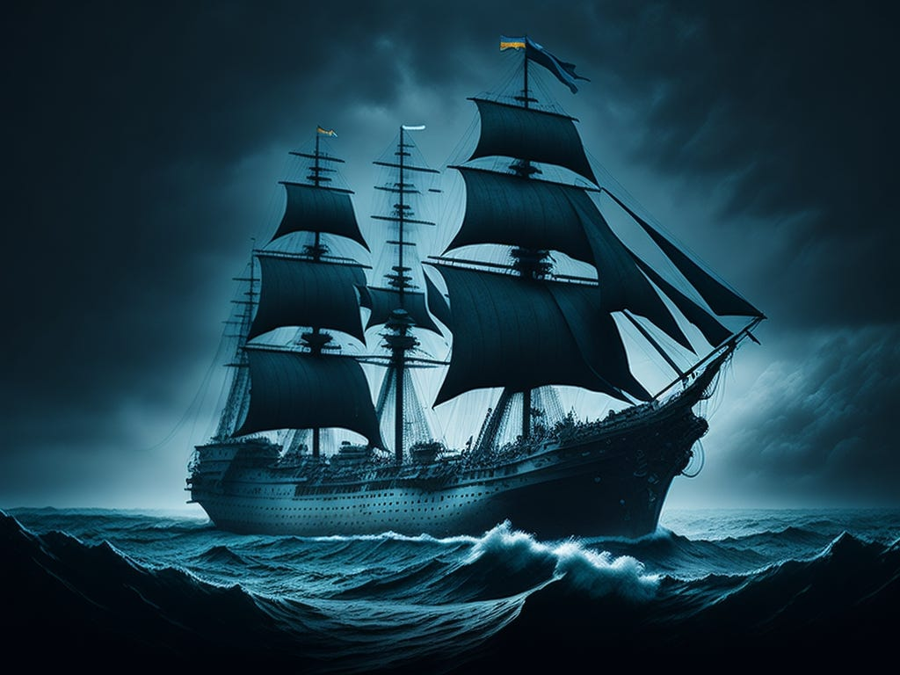

The Mary Celeste is one of the most famous maritime mysteries of all time. In 1872, the American merchant ship was found adrift in the Atlantic Ocean, completely abandoned. The ship was in good condition, with no signs of a struggle, and her cargo was intact. The crew had mysteriously vanished without a trace.
The ship's captain, Benjamin Briggs, along with his wife and daughter, and the rest of the crew, were all gone. The ship's lifeboat was missing, but no one knows why they would have left such a well-equipped vessel in the middle of the ocean. The last log entry from Captain Briggs indicated that everything was normal on board, and there was no indication of any distress.
Numerous theories have been proposed over the years, including piracy, mutiny, or a possible seaquake. Some believe the crew may have been spooked by a natural phenomenon such as a waterspout or a freak storm. Others argue that a toxic gas or vapors from the cargo of alcohol might have led to panic and caused the crew to abandon the ship in a state of confusion.
Despite many investigations, the fate of the Mary Celeste and her crew remains an enduring enigma in the world of maritime lore.
← Back to Explore